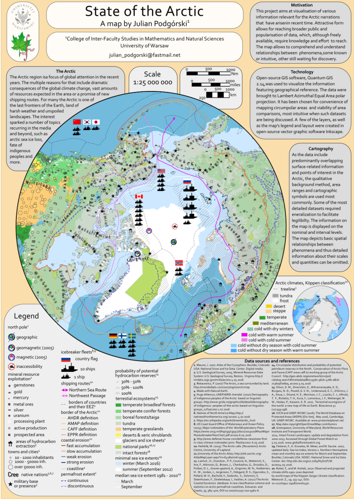

<?xml version="1.0" encoding="UTF-8"?><rss version="2.0"
	xmlns:content="http://purl.org/rss/1.0/modules/content/"
	xmlns:wfw="http://wellformedweb.org/CommentAPI/"
	xmlns:dc="http://purl.org/dc/elements/1.1/"
	xmlns:atom="http://www.w3.org/2005/Atom"
	xmlns:sy="http://purl.org/rss/1.0/modules/syndication/"
	xmlns:slash="http://purl.org/rss/1.0/modules/slash/"
	>

<channel>
	<title>Kartografia &#8211; Julian Podgórski</title>
	<atom:link href="" rel="self" type="application/rss+xml" />
	<link>../../../../mojastrona/index.html</link>
	<description>Jestem geografem i specjalistą GIS, szukającym pracy zdalnej</description>
	<lastBuildDate>Mon, 29 Jul 2024 13:02:11 +0000</lastBuildDate>
	<language>pl-PL</language>
	<sy:updatePeriod>
	hourly	</sy:updatePeriod>
	<sy:updateFrequency>
	1	</sy:updateFrequency>
	<generator>https://wordpress.org/?v=6.6.1</generator>
	<item>
		<title>Wszystkie Osady na Wyspach Owczych</title>
		<link>../../../all-settlements-on-faroe-islands-2/index.html</link>
		
		<dc:creator><![CDATA[jpodgo]]></dc:creator>
		<pubDate>Fri, 26 Jul 2024 13:34:37 +0000</pubDate>
				<category><![CDATA[Kartografia]]></category>
		<category><![CDATA[Wszystko]]></category>
		<guid isPermaLink="false">../../../index.html?p=217</guid>

					<description><![CDATA[Dzieło to jest realizacją ambicji stworzenia mapy pokazującej wszystkie miasta, wsie, osady na Wyspach Owczych. Użyłem danych farerskiej służby statystycznej oraz otwartych danych geograficznych. Styl graficzny jest bardzo tradycyjny, efekt ten uzyskałem przy pomocy Quantum GIS oraz programu graficznego Inkscape.<div class="read-more-wrapper"><a class="read-more" href="../../../all-settlements-on-faroe-islands-2/index.html" title="Read More"> <span class="button ">Read More</span></a></div>]]></description>
										<content:encoded><![CDATA[
<p class="has-medium-font-size">Dzieło to jest realizacją ambicji stworzenia mapy pokazującej wszystkie miasta, wsie, osady na Wyspach Owczych. Użyłem danych farerskiej służby statystycznej oraz otwartych danych geograficznych. Styl graficzny jest bardzo tradycyjny, efekt ten uzyskałem przy pomocy Quantum GIS oraz programu graficznego Inkscape.</p>


<div class="wp-block-image">
<figure class="aligncenter size-large"></figure></div>]]></content:encoded>
					
		
		
			</item>
		<item>
		<title>Mapa Arktyki w 2016 r.</title>
		<link>../../../mapa-arktyki-w-2016-r/index.html</link>
		
		<dc:creator><![CDATA[jpodgo]]></dc:creator>
		<pubDate>Fri, 26 Jul 2024 11:38:26 +0000</pubDate>
				<category><![CDATA[Kartografia]]></category>
		<category><![CDATA[Wszystko]]></category>
		<guid isPermaLink="false">../../../index.html?p=205</guid>

					<description><![CDATA[Anglojęzyczna mapa &#8222;State of the Arctic&#8221; (&#8222;Stan Arktyki&#8221;) z 2016 r. to owoc mojej fascynacji regionami Arktycznymi. W miarę jak coraz lepiej poznawałem tę część świata chciałem skonfrontować ze sobą różne informacje, wyszukać powiązania między pozornie niepowiązanymi zmiennymi. Zaczerpnąłem dane z wielu źródeł naukowych i OSINT-owych (otwartych) i zwizualizowałęm je w QGIS oraz programach graficznych.<div class="read-more-wrapper"><a class="read-more" href="../../../mapa-arktyki-w-2016-r/index.html" title="Read More"> <span class="button ">Read More</span></a></div>]]></description>
										<content:encoded><![CDATA[
<p class="has-medium-font-size">Anglojęzyczna mapa &#8222;State of the Arctic&#8221; (&#8222;Stan Arktyki&#8221;) z 2016 r. to owoc mojej fascynacji regionami Arktycznymi. W miarę jak coraz lepiej poznawałem tę część świata chciałem skonfrontować ze sobą różne informacje, wyszukać powiązania między pozornie niepowiązanymi zmiennymi. Zaczerpnąłem dane z wielu źródeł naukowych i OSINT-owych (otwartych) i zwizualizowałęm je w QGIS oraz programach graficznych. Choć mapa ta była projektem osobistym zrodzonym z własnej ciekawości, zaprezentowałem ją na konferencji naukowej 7th International Geosciences Student Conference (Siódma Międzynarodowa Konferencja Studentów Nauk o Ziemi) w Katowicacj w lipcu 2016 r.</p>


<div class="wp-block-image">
<figure class="aligncenter size-large"></figure></div>]]></content:encoded>
					
		
		
			</item>
		<item>
		<title>Stylizowana mapa Reykjaviku</title>
		<link>../../../mapa-reykjaviku-w-stylu-retrofuturystycznym/index.html</link>
		
		<dc:creator><![CDATA[jpodgo]]></dc:creator>
		<pubDate>Fri, 26 Jul 2024 11:18:47 +0000</pubDate>
				<category><![CDATA[Kartografia]]></category>
		<category><![CDATA[Wszystko]]></category>
		<guid isPermaLink="false">../../../index.html?p=200</guid>

					<description><![CDATA[Poniższa mapa jest stylizowaną wizualizacją danych z OpenStreetMap obejmujących Reykjavik, stolicę Islandii. Styl &#8222;retro-cyberpunkowy&#8221; osiągnąłem dzięki zastosowaniu ręcznie dobranych zasad renderowania danych z OSM oraz dalszym operacjom w programach graficznych.<div class="read-more-wrapper"><a class="read-more" href="../../../mapa-reykjaviku-w-stylu-retrofuturystycznym/index.html" title="Read More"> <span class="button ">Read More</span></a></div>]]></description>
										<content:encoded><![CDATA[
<p class="has-medium-font-size">Poniższa mapa jest stylizowaną wizualizacją danych z OpenStreetMap obejmujących Reykjavik, stolicę Islandii. Styl &#8222;retro-cyberpunkowy&#8221; osiągnąłem dzięki zastosowaniu ręcznie dobranych zasad renderowania danych z OSM oraz dalszym operacjom w programach graficznych.</p>


<div class="wp-block-image">
<figure class="aligncenter size-large"></figure></div>]]></content:encoded>
					
		
		
			</item>
		<item>
		<title>Mapy przeglądowe chilijskich lodowców</title>
		<link>../../../universidad-glacier-overview-map-2/index.html</link>
		
		<dc:creator><![CDATA[jpodgo]]></dc:creator>
		<pubDate>Thu, 11 Apr 2024 11:03:56 +0000</pubDate>
				<category><![CDATA[Kartografia]]></category>
		<category><![CDATA[Wszystko]]></category>
		<guid isPermaLink="false">../../../index.html?p=37</guid>

					<description><![CDATA[Dwie mapy zaprezentowane tutaj zostały utworzone na potrzeby mojej pracy doktorskiej. Przedstawiają one położenie dwóch lodowców dyskutowanych w pracy: Universidad i San Quintin w Chile. Jedna mapa pokazuje lodowiec Universidad w obrębie środkowego Chile (Suchych Andów) oraz położenie Suchych Andów w Chile, wraz z wykresem dodatnich stopniodni oraz rocznych sum opadów w XXI wieku. Druga<div class="read-more-wrapper"><a class="read-more" href="../../../universidad-glacier-overview-map-2/index.html" title="Read More"> <span class="button ">Read More</span></a></div>]]></description>
										<content:encoded><![CDATA[
<p class="has-medium-font-size">Dwie mapy zaprezentowane tutaj zostały utworzone na potrzeby mojej pracy doktorskiej. Przedstawiają one położenie dwóch lodowców dyskutowanych w pracy: Universidad i San Quintin w Chile. Jedna mapa pokazuje lodowiec Universidad w obrębie środkowego Chile (Suchych Andów) oraz położenie Suchych Andów w Chile, wraz z wykresem dodatnich stopniodni oraz rocznych sum opadów w XXI wieku. Druga mapa pokazuje położenie lodowca San Quintin w południowym Chile (Północnym Patagońskim Polu Lodowym) oraz położenie tego pola lodowego w Chile.</p>


<p class="has-medium-font-size">Mapy wykorzystują wysokorozdzielcze zdjęcia satelitarne jako tło dla danych znaczących dla pracy doktorskiej oraz otwarte dane geoprzestrzenne na fizycznych mapach regionów Chile.</p>


<div class="wp-block-image">
<figure class="aligncenter size-large"><figcaption class="wp-element-caption">Mapa poglądowa lodowca Universidad. Cztery kartony obejmują coraz mniejsze obszary: Amerykę Południową, Chile, Suche Andy oraz sam lodowiec. Jest on przedstawiony jako zdjęcie satelitarne z nałożonymi konturami stref znaczącymi dla mojej pracy doktorskiej.</figcaption></figure></div>

<div class="wp-block-image">
<figure class="aligncenter size-large"><figcaption class="wp-element-caption">Mapa przeglądowa lodowca San Quintin. Cztery kartony obejmują coraz mniejsze obszary: Amerykę Południową, Chile, Północne Patagońskie Pole Lodowe oraz sam lodowiec, przedstawiony na zdjęciu satelitarnym.</figcaption></figure></div>]]></content:encoded>
					
		
		
			</item>
	</channel>
</rss>
